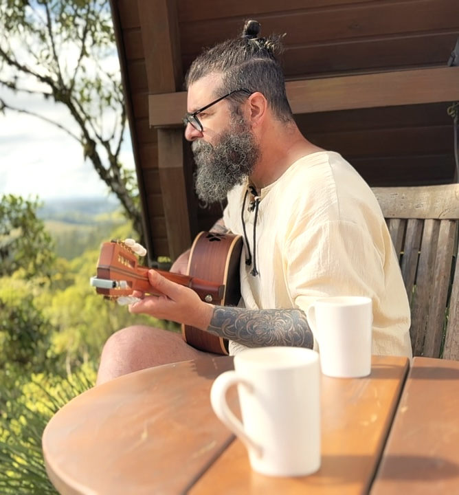

Memórias de um pé vermelho
Clebson Ribeiro

Ô de casa…
Se achegue mais… puxe uma cadeira, que a prosa hoje é das boas.
Olha… é com alegria danada que eu recebo você aqui nessa pré-audição do álbum Memórias de um Pé Vermelho.
Esse trabalho não é só um punhado de músicas, não. É retrato de infância. É cheiro de cozinha acesa cedo. É voz de mãe cantando enquanto ajeitava a vida dentro de casa.
São canções que eu ouvi ainda menino, lá no tempo em que o rádio era companhia e a música era conselho.
E sabe o que tem de diferente nisso tudo? Mais de trinta anos de estrada, tocando de tudo quanto é estilo, misturando vivência com lembrança… tudo isso acabou se encontrando aqui, nesse disco. Como rio que deságua no mesmo mar.
Eu te convido… de coração aberto… a embarcar nessa viagem comigo.
E deixo um pedido simples — coisa de músico independente:
A gente não ganha fortuna com audição, não. Ganha é gratidão. Ganha o privilégio de ser ouvido. E ganha ainda mais quando você conta pra gente o que sentiu.
Então escute… sinta… e depois me diga: o que essa música despertou aí dentro?
Um grande abraço…
e que a viola nunca se cale.
Faixas do Álbum
- Cabocla Tereza/ Chico Mineiro / Nhambu Xita👂 0
- Romaria👂 0
- Tocando em Frente👂 0
- Amargurado👂 0
- Antonio e Natália👂 0
- Vaca Estrela e Boi Fubá👂 0
- Disparada👂 0
- Mercedita👂 0
- Vide Vida Marvada👂 0
- A Terra e o Tempo👂 0